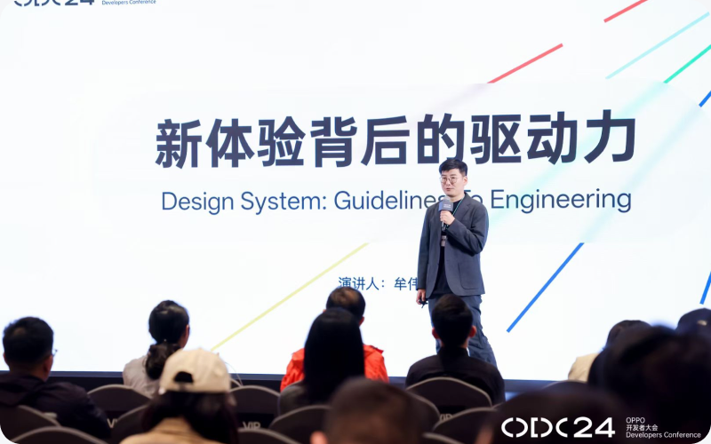

SYSTEMS / PRODUCTS / POSSIBILITIES
SCROLL TO EXPLORE ↓
从系统体验，
到产品创新。
01
系统体验策略
OS 层面的体验策略与跨业务协同，从洞察到落地的系统行为。
02
设计语言与系统
共享设计系统、控件与动效；ColorOS 15、16 两代 UI Kit 已在 Figma Community 发布。
03
AI 与原型实践
理解 AI 架构（意图、记忆、知识库），把判断做成可运行的原型。
SELECTED WORK / 作品案例
继续探索，
设计如何落在真实之中。
浏览作品案例 ↗设计，落在真实之中。
精选案例 / 2020—2026让想法，跑起来。
AI & PROTOTYPING
2025 年起将 AI 用于研究、总结、写作与方案讨论；2026 年进一步深入 Agent、本地模型与可运行原型。
结构化业务知识，对齐 Figma UI 库生成设计稿并人工微调；另一条路径接入研发 Android Compose 控件库搭建高保真 Demo。个人语音日记与记忆产品已部署阿里云，按需叙事与洞察仍在探索。
好的设计，彼此成就。
TEACHING & CONTRIBUTION
担任 OPPO 内部讲师，开展《体验设计与创新系列课程》；曾任腾讯学院高级讲师、设计通道委员。
在 OPPO 互联网服务与平台任职期间，先后培养 3 位设计师成长为部门主管并完成晋升。对外贡献包括两代 ColorOS UI Kit，以及 MSUP 与 DIA 2023 活动目录收录的分享。

AND SO MUCH MORE.